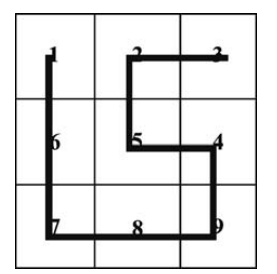

Capítulo 3 Alternativa geométrica
3.1 Funciones de Distancia en Problemas de Localización
- Distancia basada en norma de vectores
- Distancia de norma 2 o distancia Manhatam
- Distancia Euclídea
- Distancia con otras normas aplicada almacenamiento y almacenamiento con gradiente de temperatura o problemas de Material Handling (salas de cirugía).
- Distancia Matricial y casos de bloqueos (muros, zonas anegadas, etc).
- Varianza de las distancias con distintas normas.
- Curva de Hilbert.
- Revisión bibliográficas de métodos de antecesores de facility location.
- Ejercitación del capítulo
3.2 Distancia basada en norma de vectores
La distancia es una descripción numérica de la distancia entre los objetos en un momento dado. En física o en la discusión cotidiana, la distancia puede referirse a una longitud física, un período de tiempo o se estima en base a otros criterios. Al tomar decisiones sobre la ubicación, la distribución de las distancias de viaje entre los destinatarios del servicio (clientes) es un tema importante. La mayoría de los estudios de ubicación clásicos se centran en la minimización de la distancia media (o total) (el concepto de mediana) o la minimización de la distancia máxima (el concepto de centro) a las instalaciones de servicio. (Ogryczak 2000) En estos estudios, el modelado de ubicación se divide en cuatro categorías amplias:
Modelos analíticos. Estos modelos se basan en una gran cantidad de supuestos simplificadores, como el costo fijo de ubicación de la instalación. Las distancias de viaje siguen la métrica de Manhattan.
Modelos continuos. Estos modelos son los modelos de ubicación más antiguos, se ocupan de representaciones geométricas de la realidad y se basan en la continuidad del área de ubicación. El modelo clásico en esta área es el problema de Weber. Las distancias en el problema de Weber a menudo se toman como distancias en línea recta o euclidianas, pero aquí se pueden usar casi todos los tipos de funciones de distancia (Jiang y Xu 2006; Hamacher y Nickel 1998).
En el estudio de la teoría de la ubicación continua, generalmente se asume que los clientes pueden ser tratados como puntos en el espacio. Esta suposición es válida cuando las dimensiones de los clientes son pequeñas en relación con las distancias entre la nueva instalación y los clientes. Sin embargo, no siempre es así. A veces, no debemos ignorar las dimensiones de los clientes. Algunos investigadores han tratado a los clientes como regiones de demanda que representan la demanda de una región.
Jiang y Xu (2006) discutieron que algunos investigadores como Brimberg y Wesolowsky en 1997, 2000 y 2002 y Nickel et al. en 2003 usó la distancia entre la instalación y el punto más cercano de una región de demanda; y en los demás, la distancia entre la instalación y una región de demanda puede calcularse como alguna forma de distancia de viaje esperada o promedio.
Modelos de red. Los modelos de red se componen de enlaces y nodos. Los modelos de 1 mediana absoluta, 2 centros no ponderados y mediana L de criterios q en un árbol son algunos de los modelos bien conocidos en esta área. Las distancias se miden con respecto al camino más corto.
Modelos discretos. En estos modelos, hay un conjunto discreto de ubicaciones candidatas. Los modelos discretos de cobertura y ubicación de instalaciones no capacitadas, de media N discreta son algunos de los modelos bien conocidos en esta área. Al igual que las distancias en los modelos continuos, aquí se pueden utilizar todo tipo de funciones de distancia, pero a veces se pueden especificar de forma exógena (Hamacher y Nickel 1998; Fouard y Malandain 2005).
Las distancias y las normas suelen definirse en el espacio finito \(E^n\) y toman valores reales. En geometría discreta, sin embargo, a veces necesitamos tener distancias discretas definidas en \(Z\) n con sus valores en \(Z\). Dado que \(Z\) n no es un espacio vectorial, la noción de distancias y normas tuvo que extenderse.
3.3 Especificación de Norma y Distancia
Asumamos la existencia de dos puntos \(X = (x_1,y_1)\) y \(Y = (x_2,y_2)\). Luego la distancia entre ellos se puede expresar matemáticamente como \(d(X,Y)\). Según el tipo de problema que abordemos esta distancia entre \(X\) e \(Y\) respetará algunas características que le impondremos para que represente nuestro real inconveniente en el problema que abordamos. No será lo mismo el problema de distancia en una autopista, que en un centro urbano con tránsito bloqueado, o en un piso de manufactura donde los robots cruzan con peatones que no deben embestir.
En cualquier teorema o ágeblra grado para lidiar con estos problemas definimos algunas cosas repetitivias pero básicas.
Condición de positividad \[ d(X,Y) \ge 0 , \forall X,Y \] Definición de cero \[ d(X,Y) = 0 \Leftrightarrow X=Y , \forall X,Y \] Definición de simetría \[ d(X,Y) = d(Y,X) \forall X,Y \] Inequidad Triangular \[ d(X,Y) \leq d(X,R) + d(R,Y) \forall X,Y \]
3.4 Función de Distancia
La función de de distancia entre los puntos \(X = (x_1, x_2, ... X_n)\) y \(Y = (y_1, y_2, ... y_n)\) es llamada \(d_{K,p}\) o distancia Minkowski de orden \(p\), que definiremos como.
\[ d_{K,p} (X.Y) = (\sum_{i=1}^{n} (|x_i - y_i|)^p )^{(\frac{1}{p})}\]
Los parámetros \(k1\) y \(k2\) de la norma \(d_{k,p}\) pueden verse como pesos desiguales o irregularidades de distancia no simétricas a lo largo de las direcciones de los ejes. Un trabajo empírico mostró que la precisión de las estimaciones de distancia en este tipo de norma es mejor que la ponderada d_{k; p} (Uster y Love 2003) En la situación en la ecuacion anterior, podemos definir algunas funciones de distancia famosas como:
SI \(p =1\) se pueden obtener las distancias de 1 norma, rectilínea, tambien llamada Distancia Manhattan o en ángulo recto: Es la más utilizada para logística de última milla.
Las distancias rectilíneas se aplican cuando se permite viajar solo en dos direcciones perpendiculares, como las arterias Norte-Sur y Este-Oeste. Esta distancia también es popular entre los investigadores porque el análisis suele ser más simple que emplear otras métricas (Drezner y Wesolowsky 2001).
La distancia rectilínea también se denomina distancias de norma de taxi; porque es la distancia que recorrería un automóvil en una disposición de la ciudad en bloques cuadrados (si no hay calles de un solo sentido).
Si \(p = 2\) la norma es 2 conocida como noram Euclídea. Que nos dá la clásica formulación de distancia que generalmente asumimos como la única distancia que existe.
\[ d_{K,p} (X.Y) = \sqrt[]{\sum_{i=1}^{n} |x_i - y_i|^2 } \]
Si \(p = \infty\) se obtiene la norma de Chebishev que se utiliza en fenómenos no estacionarios como calculo de distancias en gases que se exánden, derrames que fluyen, desconcentración de peatones en partidos de fútbol, etc.
\[ d_\infty (X,Y)= lim_{p \rightarrow\infty} (\sum_{i=1}^{\infty} |x_i-y_i|^p)^{\frac{1}{p}} = max (|x_1-y_1| , ... , |x_n,y_n|)\]
3.5 Distancia de pasillo
Como se mencionó anteriormente, la función de distancia rectilínea o euclidiana son los métodos más comunes utilizados en los modelos, sin embargo, estas medidas de distancia no son realistas para algunas aplicaciones, como la manipulación de materiales en plantas. La figura siguiente muestra los pasillos de una planta. Las distancias de recorrido de los pasillos entre departamentos se pueden encontrar formulando y encontrando la ruta más corta en un problema de red y se pueden especificar para proporcionar la distancia necesaria entre los recursos. Esto permite evaluar la distancia real de recorrido del pasillo para cada diseño que se genera durante el proceso de búsqueda. (Norman et al. 2001).
Para calcular la distancia del pasillo, se deben considerar las estrategias de los sistemas de manipulación. “La ruta de un recolector sigue el tráfico selectivo en un solo sentido, ya que atraviesa una longitud completa del pasillo que contiene los artículos que se van a recolectar y no se le permite dar la vuelta o retroceder, pero termina en el lado opuesto del pasillo después de recolectar Los artículos. La ruta óptima en esta estrategia es organizar los artículos dentro del lote de manera que los artículos que se encuentran en el pasillo más cercano a la estación de entrada / salida se recojan primero y luego el siguiente pasillo más cercano. Cuando se selecciona el último artículo, el recolector volverá a la estación de E / S”. Chew y Tang (1999) es un ejemplo de estas estrategias.
3.6 Matriz de distancia
Yu y Sarker (2003) indicaron que Sarker en 1989 y Sarker et al. en 1994 y 1998 desarrollaron una serie de propiedades amebianas de una matriz de instancias para ubicaciones lineales igualmente espaciadas para generar diferentes asignaciones de máquinas a ubicaciones que minimizan los flujos unidireccionales y / o bidireccionales totales. La forma de una matriz de distancias puede variar a medida que cambia su asignación de ubicación correspondiente.
\[d_{XY}=\mid{X-Y}\mid = \left\lbrace \begin{array}{c} X-Y \space if \space 1\le Y < X \le L \\ Y-X \space if \space 1\le X < Y \le L \\ 0 \space if \space 1\le Y = X \le L \end{array}\right\rbrace\]
Cada distancia puede ser descompuesta en dos diferentes direcciones que se definen como:
- Backward: \(d^B\) es la matriz de sitancias de retrocesos \(d_{XY}^B\) Tal que:
\[d_{XY}^B = \left\lbrace \begin{array}{c} X-Y \space if \space 1\le Y < X \le L \\ 0 \space \space \space else \end{array} \right \rbrace\] -Fordward: \(d^F\) es la matrix de distancia de avance, con los elementos \(D_{XY}^F\) Y (Yu and Sarker 2003)
\[d_{XY}^B = \left\lbrace \begin{array}{c} Y-X \space if \space 1\le X < Y \le L \\ 0 \space \space \space else \end{array} \right \rbrace\] ## Distancia de cuadras
Dearing y col. (2005) discutieron que las distancias entre bloques son un caso especial de distancias normales que fueron introducidas a los modelos de ubicación por Witzgall et al. en 1964 y Ward y Wendell en 1985. Las distancias en bloque se utilizan para modelar la distancia de viaje en aplicaciones donde las direcciones de viaje están restringidas a las direcciones fundamentales. También tiene un amplio uso en problemas de barreras. También pueden verse como una generalización de distancias en orientaciones fijas, tal como lo introdujeron Widmayer et al. En 1987. (Dearing et al.2005) donde se supone que todas las direcciones fundamentales tienen una unidad de longitud, es decir
\[ ||a_K|| = 1 \quad \forall \quad k=1,2,......,2n,\] donde \(||a_K||\) es la norma euclidea de \(a_k\)
La distancia de bloque entre los puntos, \(X_1\) y \(X_2\) con respecto a un conjunto dado de direcciones fundamentales \(a_1, a_2; ....; a_{2n}\) se denota por \(d_p(X_1; X_2)\) y se define como
\[d_p(X_1; X_2) = \alpha_{12} + \beta_{12}\];
donde \(\alpha_{12}\) y \(\beta{12}\) son escalares no negativos teles que (Dearing et al. 2005)
\[ X_2 - X_1 = \alpha_{12} + \beta_{12}\alpha{k+1} \quad \forall \quad k= 1,2,...2n\]
3.7 Curva de Hilbert
Cantor fue el primer investigador en mapear el intervalo [0, 1] en el cuadrado [0, 1] 2. Más tarde, se presentó la primera curva de llenado de espacio, la curva de Peano, para construir una curva que pasa por cada entrada de una región bidimensional. Posteriormente, se presentaron varias curvas de llenado de espacio diferentes y la curva de Hilbert es la más conocida (Chung et al. 2007).
La curva de Hilbert es una curva continua que pasa por cada punto del espacio exactamente una vez. Permite a uno mapear continuamente una imagen en una línea y es una excelente imagen 2D para mapear líneas. La posición de cada píxel en la línea mapeada se denomina orden de Hilbert de ese píxel (Song y Roussopoulos 2002).
 Este tipo de curva pone de manifiesto que en muchas ocasiones las distancias no son la única métrica relevante, sino que otros problemas a optimizar como el ruteo pueden condiciones la distancia que deberemos asumir.
3.8 Uso de grafos
En algunas oportunidades, dentro de los problemas que se pretende resolver es necesario apelar a una representación gráfica de los mismos y utilizar técnicas de las que se utilizan en problemas de facility location. Por ejemplo técnicas de innovación como Triz o Scamper recurren a hacer mapeo de ideas y en ellas las distancias entre los nodos (equivalentes a ciudades) se asocian con la derivada del conocimiento respecto del tiempo $ { t} = I $. En particular en estos tipo s de problemas si se pretende resolver la ecuación diferencial que expondremos como
\[ \int_{k_t}^{k_T} \partial k = \int_{t=0}^{T} I \quad \partial t\] Si consideras que I (inteligencia) es constante con el tiempo la puedes sacar fuera de la integral y tu problema estará resuelto.
Pero habitualmente la inteligencia es función del tiempo y este tipo de problema es lo que se conoce como un problema con memoroia o problema dinámico. Es posible predecir su estado futuro, pero todo depende del estado inediatamente anterior.
Una buena forma de tratar las distancias que aparecen entre los nodos, que no son distancias sino flujos de conocimiento, es mediante el mapeo de grafos y la técnica de las cadena de Markov.
Recorreremos brevemente la forma de ver como este “tipo de distancias” afecta al comportamiento de todo el sistema. Adicionalmente introduciremos algunas de las herramientas con las que trabajaremos el resto del curso.
Recomiendo ver en este y otros problemas este material:
Si notas que el enlace está muy lento o que nuestro ancho de banda está congestionado puedes acceder a la versión que está cacheada en la biblioteca de la universidad.
3.9 Cadenas de Markov en R
3.10 Proceso Estocásticos
Instalación del Paquete
Para instalar un paquete en R se utiliza el comando “install.packages()”, para mayor información se digita en el compilador el código:
help(“install.packages”)
De esa forma se accede a la documentacion de dicha funcion almacenada en el CRAN. Para analizar cadenas de markov finitas utilizaremos el paquete “markovchain” version 0.6.9.11 publicado por: Giorgio Alfredo Spedicato, Tae Seung Kang y otros. En el siguiente chunk se presenta los comandos necesarios para instalar y cargar al sistema el paquete. Note que la primera linea de código tiene el simbolo “#” que es utilizado para comentar.
# install.packages("markovchain")library(markovchain)## Package: markovchain
## Version: 0.8.6
## Date: 2021-05-17
## BugReport: https://github.com/spedygiorgio/markovchain/issuesEl comando “library” carga al sistema el paquete
3.11 Introducción a markovchain
Para conocer los detalles, especificaciones o ejemplos de la libreria basta con digitar el siguiente comando, que automaticamente los redireccionará a su propia documentación.
help("markovchain")Esta libreria pretende proveer objetos para realizar analisis estadísticos de cadenas de markov a tiempos discretos. Asumamos que tenemos una cadena de markov X={X1,X2,…} definida en el espacio de estados S={a,b,c} y cuya matriz de transición es:
\[P=\lbrace 0,0.5,0.5 , 0.5,0,0.5,0.5,0.50 \rbrace\]
Dicha cadena podemos crearla en R, de la siguiente forma:
Crear la matriz de transicion P:
P = matrix(c(0,0.5,0.5,.5,0,.5,.5,.5,0),nrow = 3,byrow = TRUE)
P## [,1] [,2] [,3]
## [1,] 0.0 0.5 0.5
## [2,] 0.5 0.0 0.5
## [3,] 0.5 0.5 0.0El argumento “nrows” de la funcion matrix es para declarar el numero de filas que deseamos que nuestra matriz P posea, y el argumento “byrows” es para que almacene los elementos de la matriz almacenados en c(), fila por fila.
Crear la matriz de transición creamos el objeto “markovchain” de la siguiente forma: mc = new(“markovchain”,transitionMatrix=P,states=c(“a”,“b”,“c”),name=“Cadena 1”) Una revisión previa al análisis de nuestra cadena se puede realizar mediante los comandos “str()” y “summary”, que devuelven la estructura del objeto y el resumen general de los resultados respectivamente. Para mayor informacion revisar los comandos mediante la función help().
mc = new("markovchain",transitionMatrix=P,states=c("a","b","c"),name="Cadena 1") 3.12 La estructura del objeto mc es:
library(markovchain)
str(mc)## Formal class 'markovchain' [package "markovchain"] with 4 slots
## ..@ states : chr [1:3] "a" "b" "c"
## ..@ byrow : logi TRUE
## ..@ transitionMatrix: num [1:3, 1:3] 0 0.5 0.5 0.5 0 0.5 0.5 0.5 0
## .. ..- attr(*, "dimnames")=List of 2
## .. .. ..$ : chr [1:3] "a" "b" "c"
## .. .. ..$ : chr [1:3] "a" "b" "c"
## ..@ name : chr "Cadena 1"mc es un objeto de tippo markovchain, que representa una lista con los argumentos provistos declarados en el constructor.
El resumen de la cadena es:
summary(mc)
summary(mc)## Cadena 1 Markov chain that is composed by:
## Closed classes:
## a b c
## Recurrent classes:
## {a,b,c}
## Transient classes:
## NONE
## The Markov chain is irreducible
## The absorbing states are: NONEPara visualizar el diagrama de transición de la cadena lo realizamos con la función plot(mc)
plot(mc)Otras funciones importantes son:
absorbingStates(): Identifica los estados Absorbentes
transientStates(): Identifica los estados Transitorios
recurrentClasses(): Identifica las clases recurrentes
Para la cadena de markov definida se obtiene que:
recurrentClasses(mc)## [[1]]
## [1] "a" "b" "c"recurrentClasses(mc)## [[1]]
## [1] "a" "b" "c"transientStates(mc)## character(0)absorbingStates(mc)## character(0)3.13 Análisis Probabilístico
Para conocer la probabilidad de transición en 1 paso entre un estado y otro basta con utilizar la función transitionProbability(), con los argumentos:
object: la cadena de markov
t0: el estado en el tiempo 0
t1: el estado en el tiempo 1
La probabilidad de transicion en un paso del estado “a” al estado “c” es:
transitionProbability(object = mc,t0 = "a",t1 = "c")## [1] 0.5Recuerde que dicha probabilidad es un elemento de la matriz de transición P, por lo tanto, la probabilidad de transicion del estado “a” al estado “b” es simplemente P23
mc[2,3]## [1] 0.5Es posible computar la matriz de transición en n pasos, simplemente computando la n-ésima potencia de la matriz de transición P, como ejemplo calcularemos la matriz de transición en n = 5 pasos.
n = 5 # El número de pasos al futuro mc ^ n
n = 5 # El número de pasos al futuro
mc ^ n## Cadena 1^5
## A 3 - dimensional discrete Markov Chain defined by the following states:
## a, b, c
## The transition matrix (by rows) is defined as follows:
## a b c
## a 0.31250 0.34375 0.34375
## b 0.34375 0.31250 0.34375
## c 0.34375 0.34375 0.31250Tambien se pueden conocer la distribución de la cadena en n pasos adelante (P(Xn)) multiplicando la distribucion inicial de X0 por la matriz de transición en n pasos (Pn), calcule la distribución de la cadena en el tiempo n = 6, si la ditribución inicial de la cadena es “(0.5, 0.2, 0.3)”.
X0 = c(0.5,0.2,0.3) # La distribucion de X en t = 0
n = 6
Xn = X0*(mc^n)
Xn## a b c
## [1,] 0.3359375 0.33125 0.3328125Por lo tanto la distribución de la cadena en 6 pasos es:
Puesto que Xn es una función de densidad, la suma de las probabilidades en todos los estados debe ser 1.
sum(Xn)## [1] 1Finalmente encontrar la distribución estacionaria de la cadena se obtiene mediante la función “steadyStates” de la siguiente forma:
DistEst = steadyStates(mc)
DistEst## a b c
## [1,] 0.3333333 0.3333333 0.3333333Recuerde que los tiempos medio de recurrencia son los inversos multiplicativos de la distribución estacionaria y pueden ser computados facilmente.
M = 1/DistEst
M## a b c
## [1,] 3 3 3